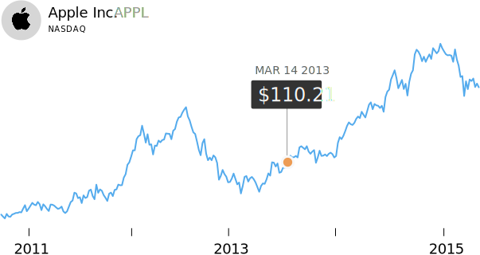
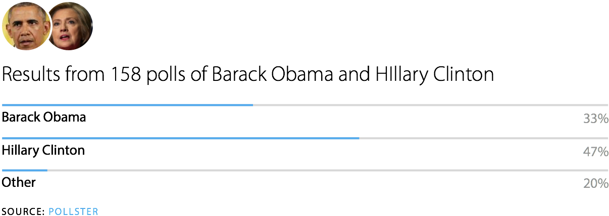

Obama destroys Hillary Clinton's inevitability
Former first lady and New York Sen. Hillary Clinton was considered a shoo-in for the Democratic presidential nomination in 2008, consistently leading all others by about 20 points in late 2007.
But behind the scenes, her support was eroding. Many powerful Democrats, including Senate Majority Leader Harry Reid, believed freshman Illinois Sen. Barack Obama would be a stronger general election candidate than Clinton and quietly encouraged him to run.
Obama did so and racked up endorsements. Meanwhile, Clinton's campaign suffered infighting and criticism from liberal groups that preferred Obama. After a protracted primary battle, Obama clinched the nomination and sailed into the White House.
Hillary Clinton in the lead again
In her second go at the Democratic presidential nomination, Hillary Clinton again seems unbeatable. But some Democratic power players are reportedly worried about her performance, especially her handling of a scandal involving emails she sent as secretary of state. This has fueled calls for Vice President Joe Biden to make a last-minute entry into the race.
Clinton may not be as vulnerable as she seems. Her lead over other Democratic candidates is higher than it was at this stage of the 2008 election, and she has far more endorsements, which are a key indicator of a presidential victory.
The world mourns Steve Jobs' death
The global outpouring of grief that followed Jobs' death from pancreatic cancer at age 56 was unusual for a business leader. Then again, Jobs was hardly your average executive.
He revolutionized personal computing, animated movies, music, phones and digital publishing. In the days after his death, commentators hailed Jobs as a genius inventor on par with Edison or Franklin.
Jobs would have appreciated the comparisons. Two years before his death he approached Walter Isaacson, the writer behind the acclaimed biographies of Albert Einstein and Benjamin Franklin, and asked him to write his official biography, promising total access.
Official biography presents a brilliant leader, flawed human being
Simon & Schuster executives rushed Isaacson's Steve Jobs to print after learning Jobs' death was imminent. The biography was a publishing phenomenon, selling more than 379,000 copies in the first week.
The book depicted Jobs as a brilliant, demanding leader who was at times tempestuous, and cruel to those closest to him. Jobs' friends and family bristled at Isaacson's depiction of the man they knew. Whether the book was accurate or not, Sony executives secured the film rights.
After years of struggle, 'Steve Jobs' arrives
After four years of production hell, with directors, actors and even production studios committing to the project and then abruptly dropping out, Steve Jobs finally hit theaters. It received rave reviews, although predictably not from members of Jobs' inner circle.
The fight over who Steve Jobs was will continue, no doubt, although some believe such debates will fade with time.
In the long run, though, I believe that the disagreements about Jobs' personality will have diminishing importance as future students of technology and culture seek to understand what Steve Jobs actually did, and how he did it.
Kanye finds fame with 'Through the Wire'
Soon after the Beyonce/Jay-Z track was released, Kanye shattered his jaw in a car crash. He had just signed his first record deal, so he wrote a song from his hospital bed with his jaw wired shut.
"Through the Wire" is remarkably humble. Kanye describes his difficulty eating by saying he'll just "sip the sizzurp," nodding at Three Six Mafia. He thanks God that he wore a seatbelt and laments the difficulties uninsured Americans face.
Kanye used his "chipmunk soul" technique to turn Chaka Khan's "Through the Fire" into a backing chorus that some thought referred to his newly puffy cheeks. The song was released a year after his accident as his first single. A few months later, The College Dropout launched Kanye to fame.
How the Mission burrito took over America
The roots of the burrito itself go back decades before El Faro's monster was created, to the borderlands of Arizona and Mexico, where a simple wrap of beans and cheese caught on with braceros, the Mexican agricultural workers who liked it because it was filling and cheap.
That last one doesn't have much culinary traction outside its hometown, but another Denver export does. In a big way.
"Burritos were around for the '60s, '70s and '80s, but what made the burrito what it is today was Chipotle," Arellano said. "Steve Ells was cooking in San Francisco and he fell in love with the Mission-style burritos, and he brought them back to his hometown, Denver. What people obsess over these days is the Mission burrito. That's the one that made burrito culture explode. It's the Beatles of burritos."
Trump taps nativism
Republican presidential hopeful Donald Trump forcibly ejected Jorge Ramos, a highly respected Mexican American TV anchor, from a press conference after Ramos attempted to ask a question without being called on.
Trump had already adopted a nativist platform in his presidential run, referring to Mexican immigrants as "rapists" in his announcement speech and calling for the deportation of all undocumented immigrants.
Trump has consistently led early polls of Republican primary voters. But his nativist rhetoric has cost him: Trump's favorability rating amongst Hispanics is seven times lower than any of his Republican opponents - and the GOP badly needs Hispanic support to win in 2016.
An arid anniversary for Yosemite
As Yosemite National Park prepares for its 125th anniversary, reports about how drought has affected the park have dominated press coverage.
Bridalveil Falls' rushing water has gone wispy. Ansel Adams' famous photographs of the park are at risk of becoming historical artifacts.
Yosemite, once the proud focus of how America preserves its nature, could become a cautionary tale of the country's plunder. Hundreds of years after early colonists feared swamps on the East Coast, a paucity of water stokes similar fears on the other side of the continent.
Google's first IPO
In an eagerly anticipated move, Google went public, trading on the Nasdaq exchange for the first time, just a few months after launching Gmail.
Within a decade, the value of its shares rose 1,300% and the company grew into one of the largest in the world, with annual revenues of more than $65 billion.
US gets blown out again, and again, and again ...
The American national team hadn't played a single match in three years when they showed up to Mexico City's 69,000 seat Estadio Universitario for a World Cup qualifier. It showed: The hosts were up 2-0 less than a half-hour in, and they tacked on four more to win 6-0, the biggest victory in the history of the rivalry.
Mexico didn't lose a single match from 1937-1980. In the pit-like Estadio Universitario (renamed Estadio Olimpico in 1968), Mexico didn't even concede a goal. El Tri hosted two World Cups and became a regional powerhouse while the sport floundered within the borders of their northern neighbor.
After four years of production hell, with directors, actors and even production studios committing to the project and then abruptly dropping out, Steve Jobs finally hit theaters. It received rave reviews, although predictably not from members of Jobs' inner circle.
The fight over who Steve Jobs was will continue, no doubt, although some believe such debates will fade with time.
In the long run, though, I believe that the disagreements about Jobs' personality will have diminishing importance as future students of technology and culture seek to understand what Steve Jobs actually did, and how he did it.
Hillary Clinton in the lead again
In her second go at the Democratic presidential nomination, Hillary Clinton again seems unbeatable. But some Democratic power players are reportedly worried about her performance, especially her handling of a scandal involving emails she sent as secretary of state. This has fueled calls for Vice President Joe Biden to make a last-minute entry into the race.
Clinton may not be as vulnerable as she seems. Her lead over other Democratic candidates is higher than it was at this stage of the 2008 election, and she has far more endorsements, which are a key indicator of a presidential victory.